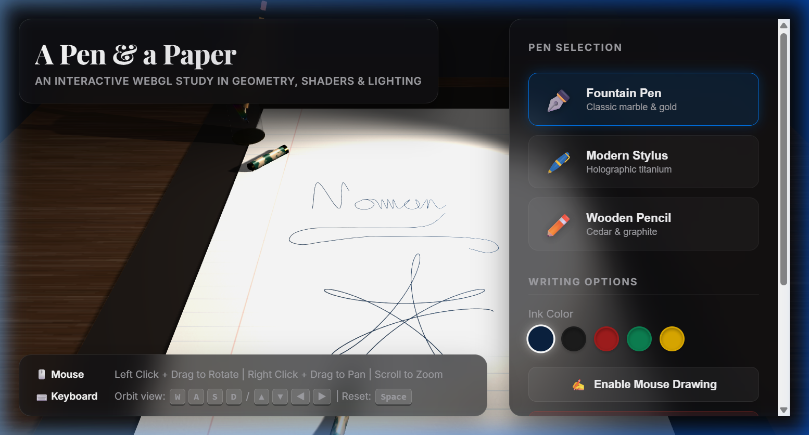

The primary goal of this project is to implement an interactive 3D workspace scene using Three.js. The scene depicts a notebook paper sheet resting on a wooden desk with an active pen drawing on it. The implementation successfully incorporates:
The project is built entirely on web standards running natively in any modern web browser:
All 3D objects and meshes are built using Three.js geometries, combined with dynamic custom texture maps:
Allows camera orbiting around the paper using spherical coordinates:
W / ArrowUp and S / ArrowDown adjust the polar angle ($\phi$).A / ArrowLeft and D / ArrowRight adjust the azimuthal angle ($\theta$).Space smoothly resets the camera back to the original isometric viewport angle.Context-aware: OrbitControls are used for viewing, while toggling "Enable Mouse Drawing" projects a ray onto the paper. Dragging paints ink strokes onto the canvas, and the 3D pen follows the cursor.
The auto-write engine moves the pen along a cursive path ("Three.js" and a spirograph). The pen tilts dynamically based on its motion velocity vector and lifts/drops realistically during transitions.
Uses a warm spotlight lamp ($0xfff1e0$, intensity $2.2$) with soft shadow-mapping (`THREE.PCFSoftShadowMap`), ambient room fill, and a localized point light at the stylus tip for a glowing neon bloom.
Implemented via THREE.ShaderMaterial:
| # | Feature Name | Classification | Description |
|---|---|---|---|
| 1 | Custom Shaders | Implemented | Custom GLSL fBm marble noise and holographic Fresnel shaders. |
| 2 | Lighting & Shadows | Implemented | Soft shadows via SpotLight, ambient fill, and pen tip light. |
| 3 | Perspective Projection | Implemented | Perspective camera calibration and Target orbiting constraints. |
| 4 | Procedural Textures | Implemented | Desk wood grain, lined notebook page, and graphite lead. |
| 5 | Spline Animation | Implemented | Continuous cursive script and spirograph curves drawing. |
| 6 | Keyboard Camera Orbit | Implemented | Spherical orbiting using WASD/Arrows and Space reset. |
| 7 | Mouse Interaction | Implemented | Raycasting coordinate mapping to paint custom ink drawings. |
| 8 | Model Swapping UI | Implemented | Swappable Fountain Pen, Modern Stylus, and Wooden Pencil. |
| 9 | Interactive Pen Holder | Implemented | Glass holder that automatically updates containing unused pens. |

The project development tasks were distributed among the group members as follows:
| Student Name | Student ID | Contribution & Tasks Performed |
|---|---|---|
| Ferdaous Wahid | 2022100010077 | Shader implementations (vertex and fragment), mathematical spirograph equations, and keyboard orbiting camera physics. |
| Abdullah Al Noman | 2022200010031 | Geometry modeling of the pens, desk lamp, glass holder, and UI overlay panel styling sheets. |
| Javer Hossain | 2022100010086 | Procedural canvas texture generators, raycasting drawing coordinates mapping, and spline path transitions. |